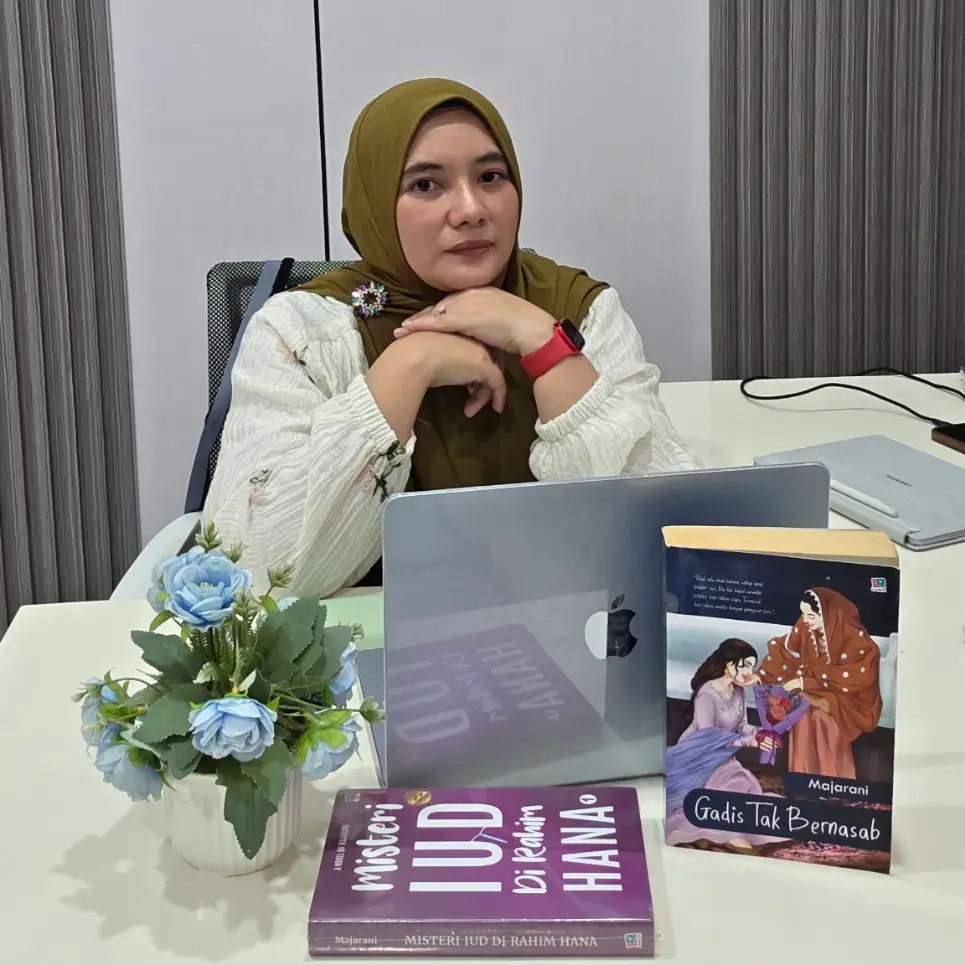

{{ b.judul }}
dari “{{ b.karya }}”
{{ b.teaser }}
{{ b.excerpt }}
— cuplikan pembuka · versi lengkap ada di bawah

Penulis drama rumah tangga, roman & misteri
Akrab disapa Maja, ia menulis di KBM App sejak 2020 — 75 karya drama rumah tangga, roman, dan misteri yang dibaca 17,8 juta kali dan diikuti 60 ribu pembaca. “Misteri IUD di Rahim Hana” memecahkan rekor pendapatan Rp66 juta dalam sebulan.
Putar raknya, ketuk buku yang menarik matamu — semua cerita dibaca lewat aplikasi KBM.
Buka rak 3D layar penuh →Adegan yang dipotong, sudut pandang tokoh lain, dan surat yang tak pernah dikirim — tidak ada di KBM, hanya di sini. Cukup tinggalkan nama dan nomor WhatsApp untuk membukanya.
3 konten eksklusif · bertambah seiring cerita berjalan
Dari bab pertama sampai hari ini.
{{ t.desc }}
Tinggalkan nama dan nomor WhatsApp — setiap ada bab baru atau bonus eksklusif, kamu yang pertama tahu.
Nomormu aman, hanya untuk kabar rilis — tidak dibagikan ke siapa pun. Bonus: akses Ruang Bonus Pembaca langsung terbuka.
Cerita di balik cerita: adegan yang dipotong, sudut pandang tokoh lain, dan surat yang tak pernah sampai. Tidak ada di KBM — hanya di sini.
Selamat datang kembali, {{ pembaca }}. Semua bonus terbuka untukmu.
dari “{{ b.karya }}”
{{ b.teaser }}
{{ b.excerpt }}
— cuplikan pembuka · versi lengkap ada di bawah
Semua bonus adalah materi pelengkap — kelanjutan cerita hanya terbit di KBM App.
dari “{{ b.karya }}”
Cukup tinggalkan nama dan nomor WhatsApp. Bonus langsung terbuka, dan kamu dapat kabar setiap bab baru terbit.
Nomormu aman, hanya untuk kabar rilis — tidak dibagikan ke siapa pun.
Kamu sudah terdaftar. Dua langkah kecil lagi supaya tidak ketinggalan apa pun:
Saluran WhatsApp adalah cara tercepat tahu bab baru — cukup sekali ikuti.
Ikuti urutan ini supaya tidak ada kejutan yang bocor duluan. Semua dibaca di KBM App.
Dua novel lepas — tidak terhubung dengan semesta mana pun.
{{ node.desc }}
Majarani — akrab disapa Maja — menulis di KBM App sejak 2020: 75 karya drama rumah tangga, roman, dan misteri. Meraih peringkat Emerald, pernah No. 1 Fortune 500 KBM, dan karyanya dilirik rumah produksi untuk adaptasi film.
{{ s.angka }}
{{ s.label }}
PDF 2 halaman · bio, statistik, katalog karya · 1,4 MB
Untuk penawaran penerbitan, adaptasi, atau kolaborasi brand — hubungi langsung via WhatsApp. Dibalas dalam 1–2 hari kerja.
WhatsApp Manajemen